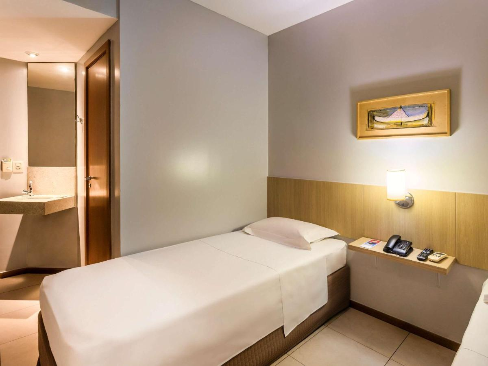

EcoLodge



Local: Avenida Gentil Bittencourt, 85, Batista Campos, CEP 66015-140
Preço: R$ 276 - Diária | 1 pessoa
Descrição: Bem localizado no centro de Belém do Pará e a 1,7 km do tradicional Mercado Ver-o-Peso, o Ibis Budget Belém Batista Campos oferece quartos de qualidade com Wi-Fi grátis. Além disso, você pode usufruir de um balcão de turismo.
Status: Disponível
Local: Avenida Júlio César, 1777, CEP 66123370,
Preço: R$ 530 - Diária | 1 pessoa
Descrição: As acomodações do Hotel Vila Rica são práticas e possuem banheiro privativo. As unidades contam com ar-condicionado, frigobar TV a cabo e telefone.
Para sua comodidade, o serviço de quarto está disponível 24 horas por dia, 7 dias por semana.
Status:Disponível
Local: Avenida Gentil Bittencourt, 85, Batista Campos, CEP 66015-140
Preço: R$ 414 - Diária | 1 pessoa
Descrição: O Hotel Sagres oferece acomodações 4 estrelas em Belém, a apenas 1,4 km da Basílica Santuário de Nossa Senhora de Nazaré. A propriedade tem uma grande piscina ao ar livre, assim como bar e restaurante.
Status:Disponível